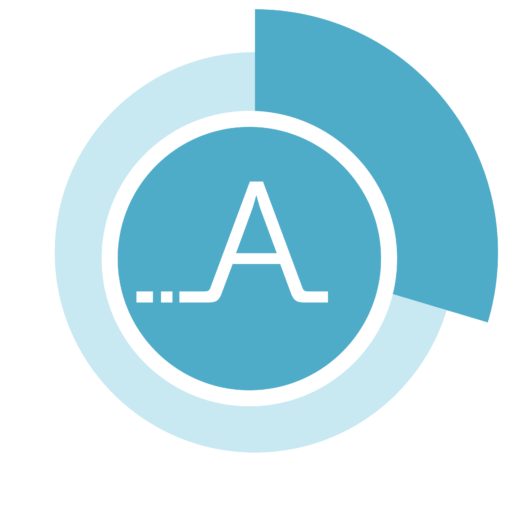

<div *ngIf="!isLoading else loading">
    <h1>Check if the ressource is available</h1>
    <!-- i18n-->
    

    <div class="wrapper">
        <app-affluences-date-picker (datepickerEvent)="onDateSet($event)"></app-affluences-date-picker>
        <app-affluences-time-picker (timepickerEvent)="onTimeSet($event)"></app-affluences-time-picker>
    </div>
    <button *ngIf="date && time" nbButton outline status="primary" (click)="getAffluences()">Get Affluences</button>

    <app-toast *ngIf="affluences" [toastMessage]="affluences.data" [toastStatus]="affluences.status"></app-toast>
</div>

<ng-template #loading>
    <div class="spinner">
        
    </div>
</ng-template>